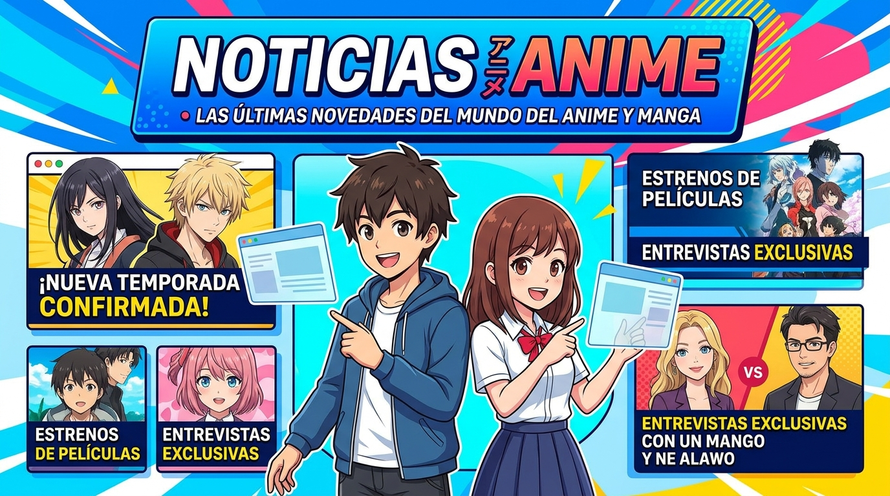

Tu dosis semanal de anime
El mundo del anime, al día.
Estrenos, noticias, recomendaciones y guías para que siempre tengas una nueva serie en tu lista.
Descubrir noticias
Últimas publicaciones
Noticias destacadas
Lo más interesante para seguir la temporada.
🔥 EstrenosFechas, temporadas nuevas y anuncios oficiales.
⭐ RecomendacionesEncuentra tu próximo anime favorito.
📚 Guías y análisisContexto, opiniones y explicaciones sin spoilers innecesarios.